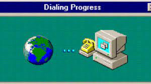
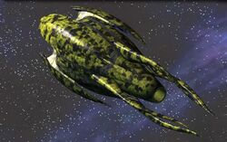
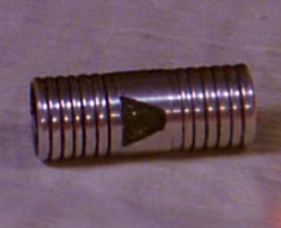

my thoughts on babylon5...
as a teenager i watched babylon five with wonder and it got me hooked on scfi, i have since watched the show
6 times from start to finish and every time i learn something new.
Babylon 5 has everything you could want in a tv show and i have never found it boring or repetitive like some
shows.I have always lifted my feet off the floor because i have a deep fear of spiders so watching Babylon five
in a dark room was fun when the shadow ships appeared on the screen.
I liked that every race including humans had history, good and bad and every race had problems to overcome.
michael straczynski did a fantastic job on babylon 5 and i do not think anyone could ever produce another show
of
the same quality again.
Season 3 is my favourite season and i love all the lasers and the cgi even if it is dated now it was still
amazing back then.
well thats my 2pence worth on babylon5 hope you like the site.
1:It Pioneered Multi-Season Story Arcs:
2:It Was The First American Show To Have One Writer Script An Entire Season:
3:In the first draft script, Delenn Was Originally A Man:>
4:only four actors stayed with the show from its pilot movie through the very last episode.

5:It Was One Of The First Shows To Use The Internet To Interact With Its Fans:
6:Every Character In The Series Had A "Trap-Door written into their backstory:
7:The Plans For Season 5 Were Stolen At A Convention

8:The design of Vorlon ships is based on the shape of a bulb of garlic:
9:Stephen Furst Was Cast As Vir Because Of A Botched Audition:
10:The space suit props worn by B5 Starfury fighter pilots were liquid-cooled. The detailed helmets alone
cost
$3,000 each

11:The 700-year-old extendable fighting staff belonging to Ranger Marcus Cole was such a brilliant idea that
it
popped up in The Phantom Menace a few years later in the hands of Darth Maul, only this time as a
lightsaber.